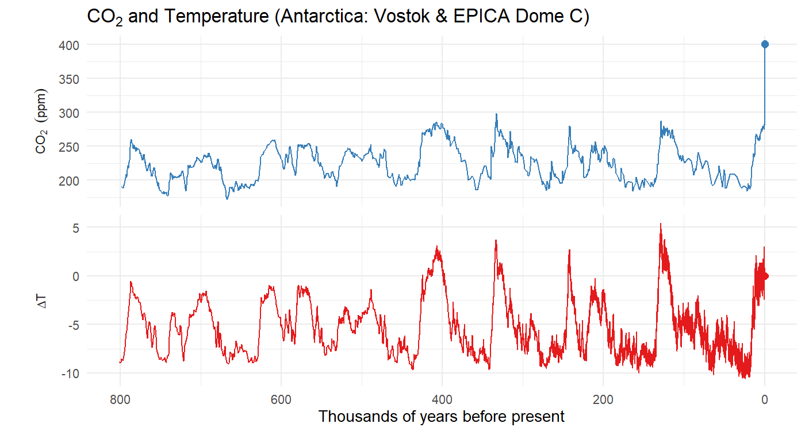
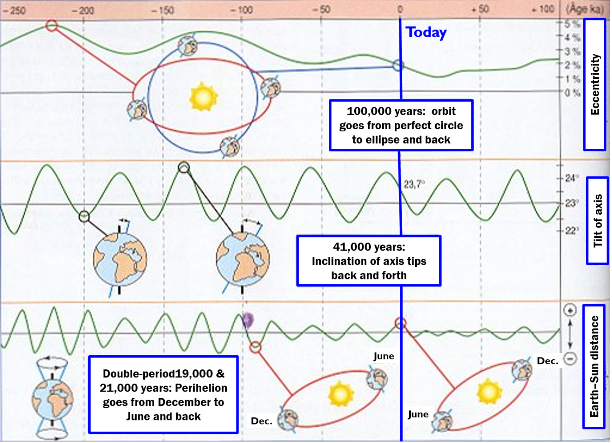
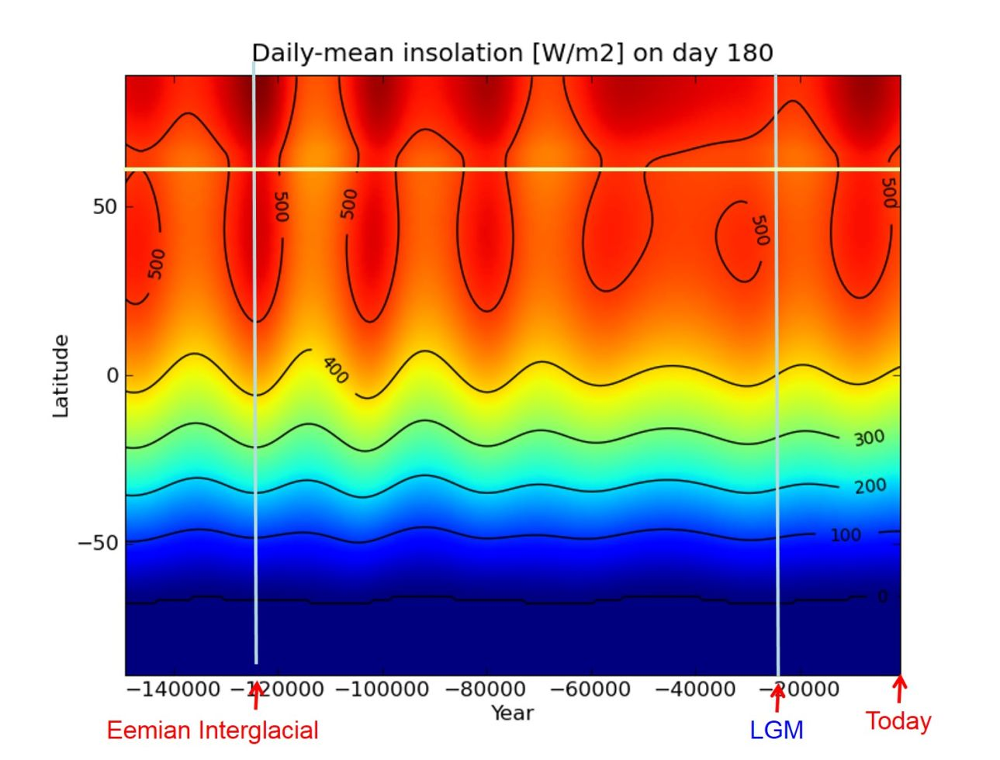
Why would the summer sunlight in the
far northern hemisphere be so important?
| 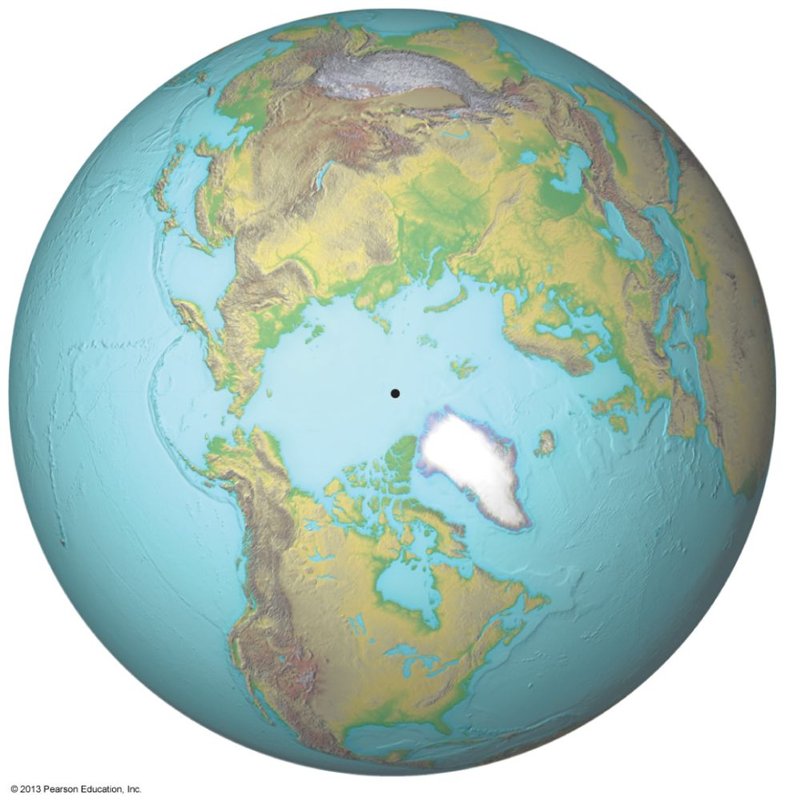 | 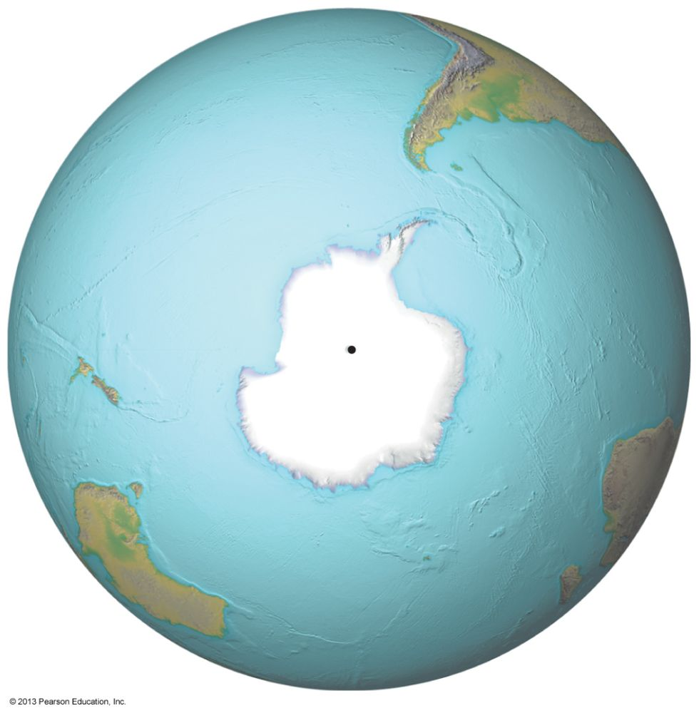 |
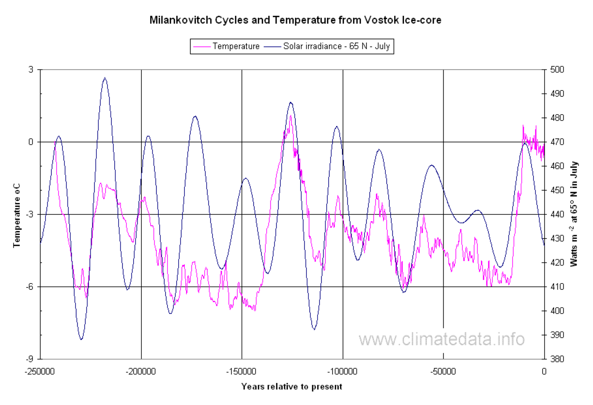
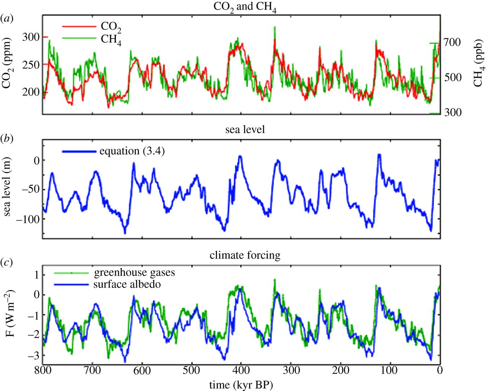
J. Hansen et al., Phil. Trans. Royal Soc. A 371, 20120294 (2013) doi:10.1098/rsta.2012.0294
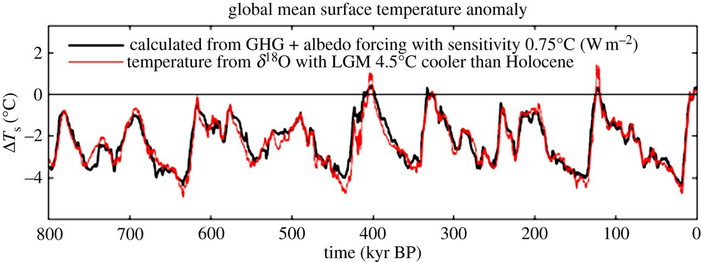
J. Hansen et al., Phil. Trans. Royal Soc. A 371, 20120294 (2013) doi:10.1098/rsta.2012.0294
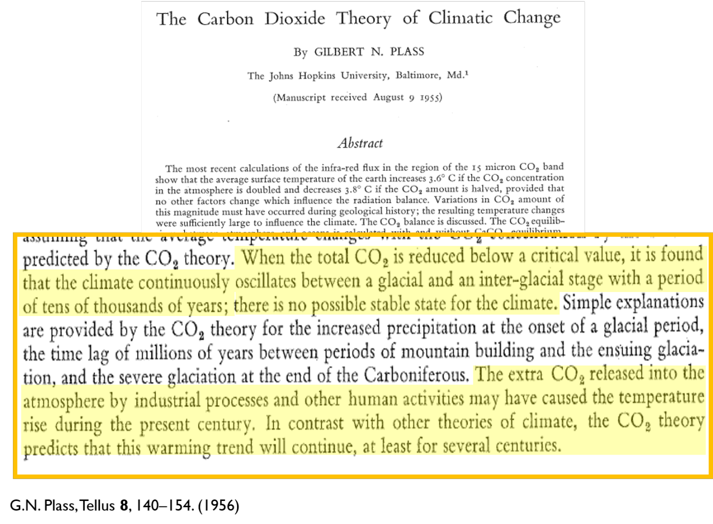
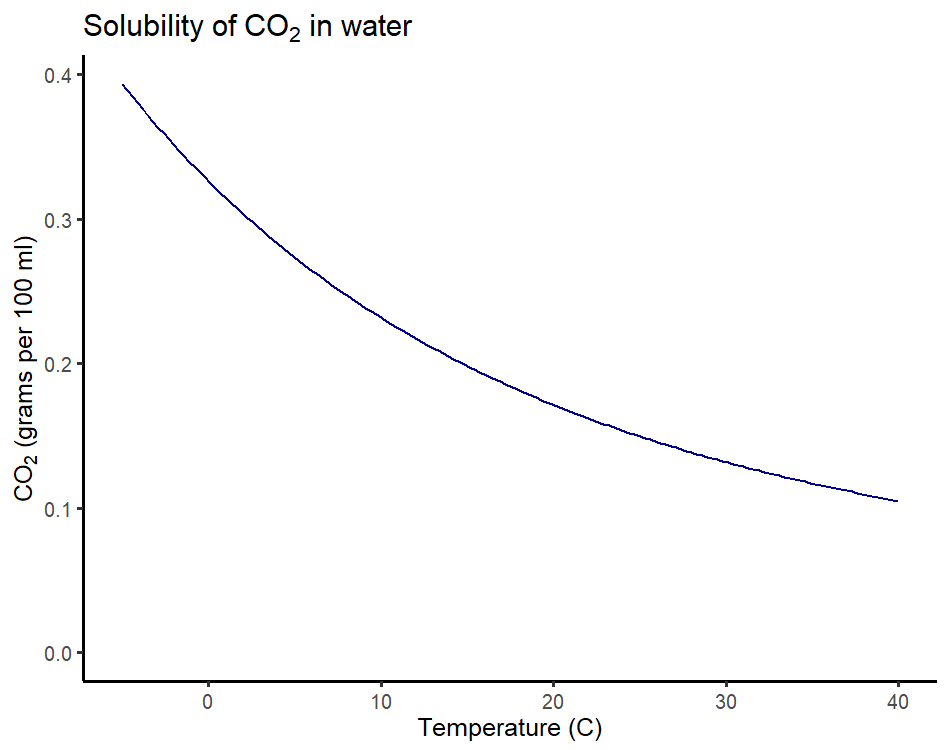
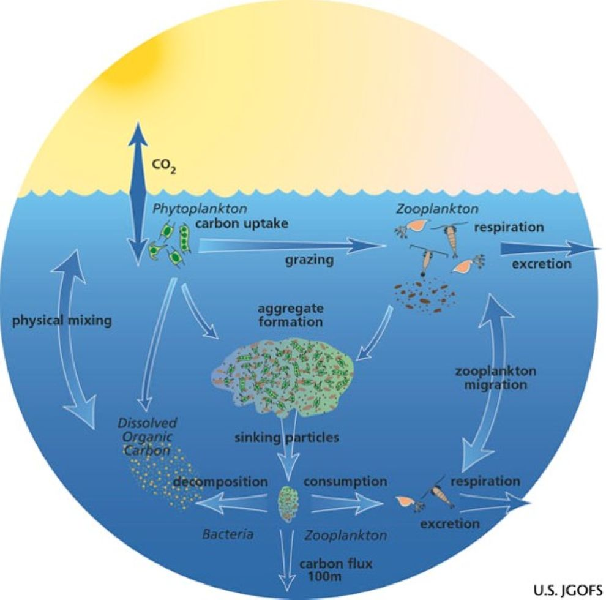
Troposphere:
Ocean:
|
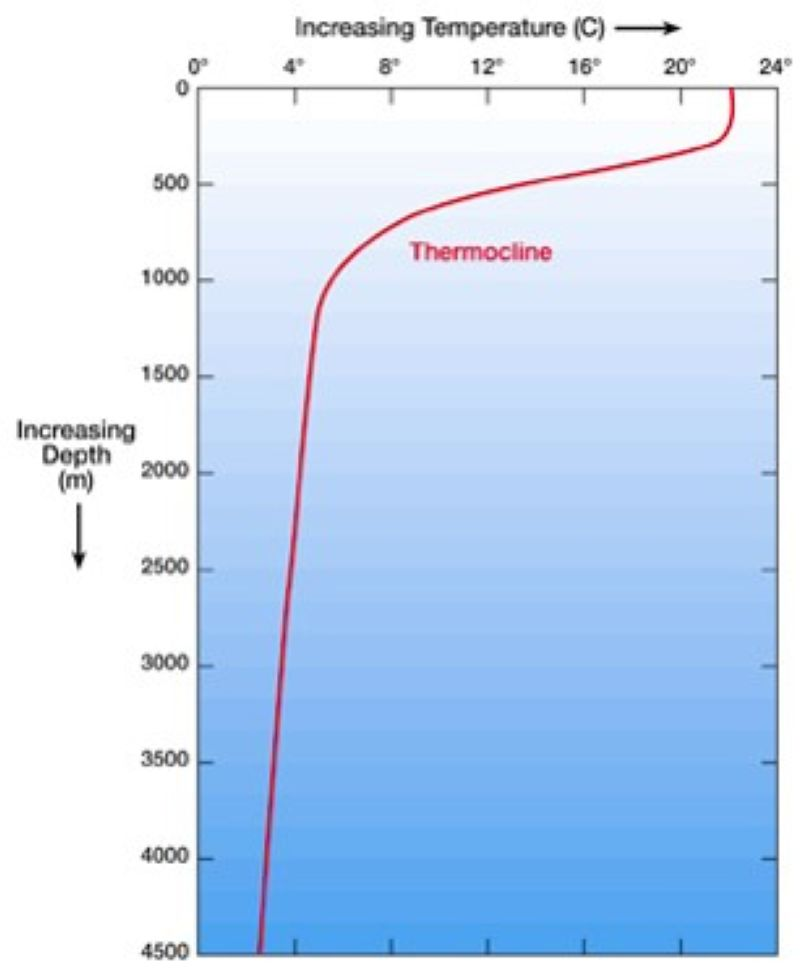 |
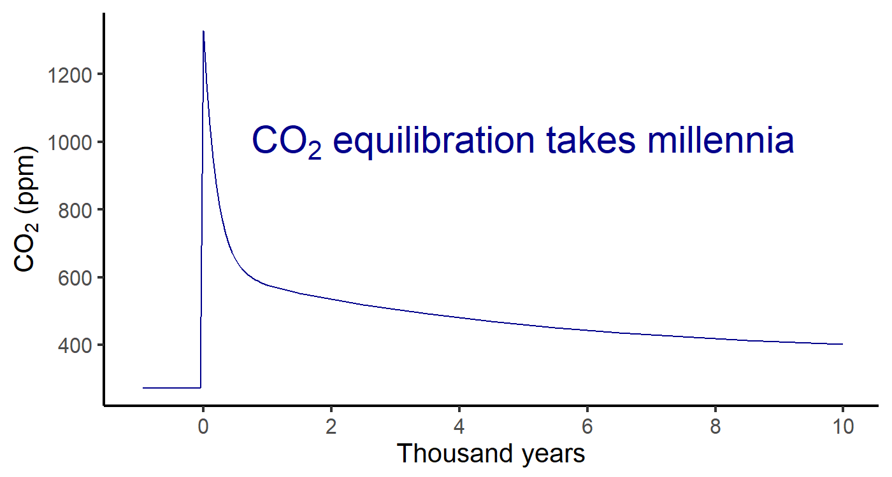
CO2 is balance of volcanic outgassing
and chemical weathering
As long as outgassing is constant,
weathering acts as thermostat.
Earth’s temperature has been
remarkably stable over time.
Change of volcanic outgassing
changes “setting” of thermostat.